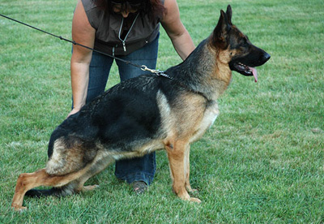

Dams for Sale
Niki ze Skalnego WzgorzaDam born : 08. October 2009 Daughter of VA1 Ober von Bad-Boll 2010 World Champion http://www.pedigreedatabase.com/german_shepherd_dog/dog.html?id=743775 Sire Pedigree: http://www.pedigreedatabase.com/german_shepherd_dog/dog.html?id=482525 |
|  | V Hanka vom ZellwaldrandDaughter of VA1 2006 Zamp vom Thermodos
|
 |
SG Helge vom MoorbeckDam born : 25. March 2007 http://www.pedigreedatabase.com/german_shepherd_dog/dog.html?id=555367 |
 |
NIXI ze Skalnego WzgorzaIPO 1 - Daughter of VA1 Ober von Bad-Boll Dam born : 08. October 2009 |
 |
Renna von Haus GalliDam born : 09. January 2008 |
 |
Hoxi ze Skalnego WzgorzaDam Born: 05/10/2011 Daughter of VA1 Ober von Bad-Boll 2010 World Champion http://www.pedigreedatabase.com/dog.html?id=750501 |